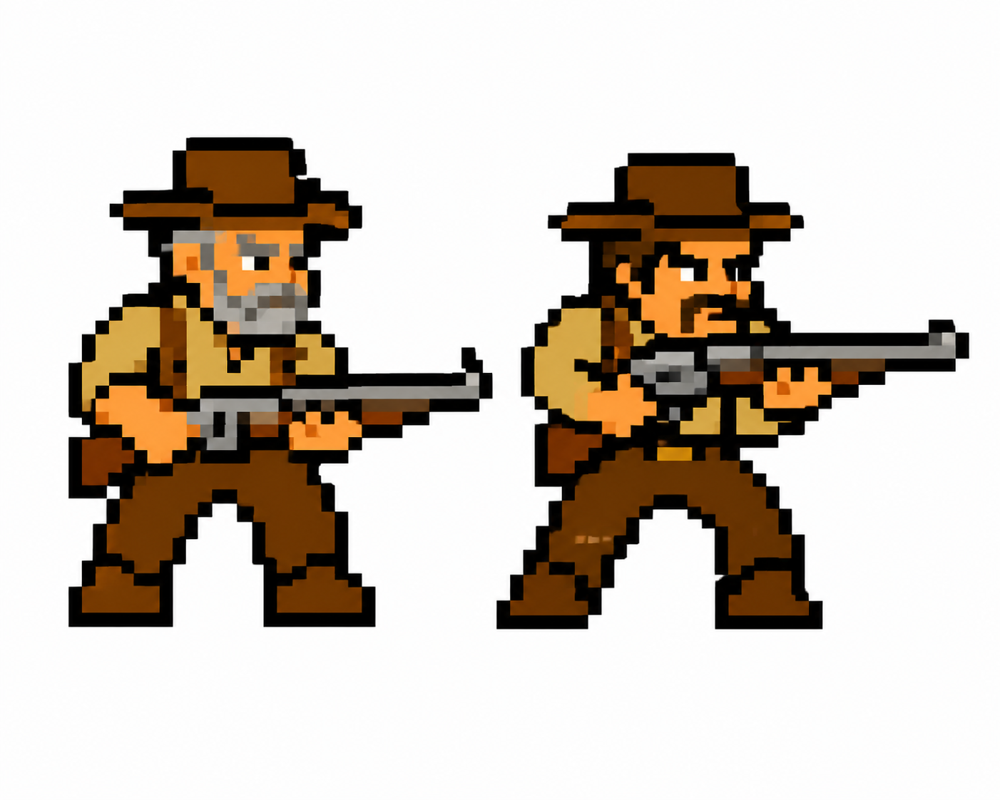
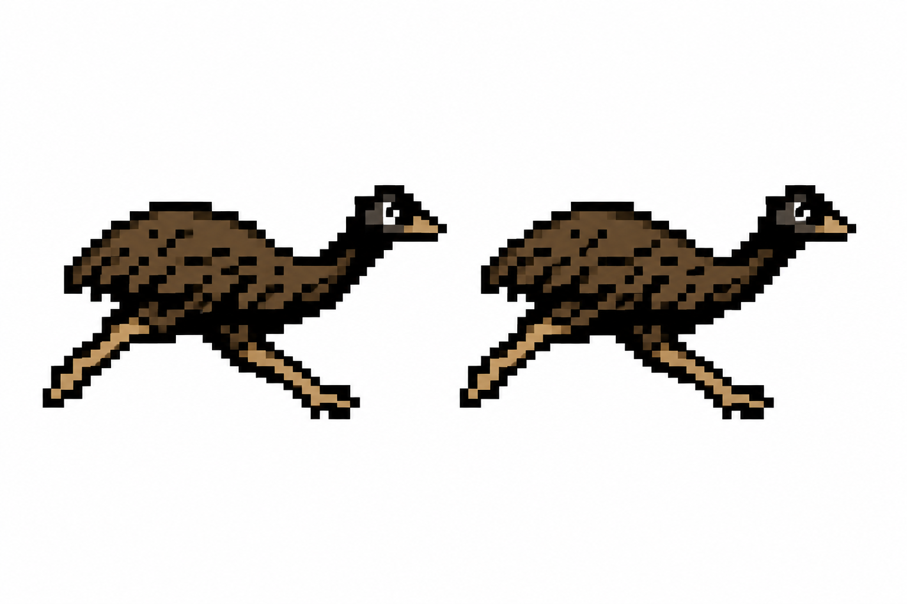
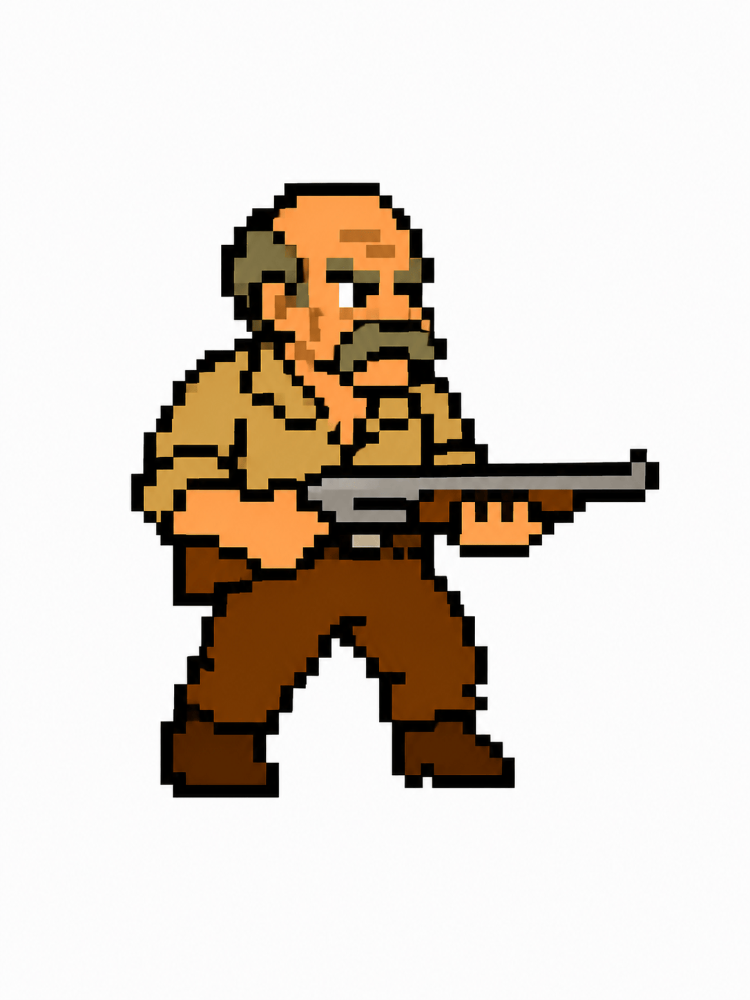
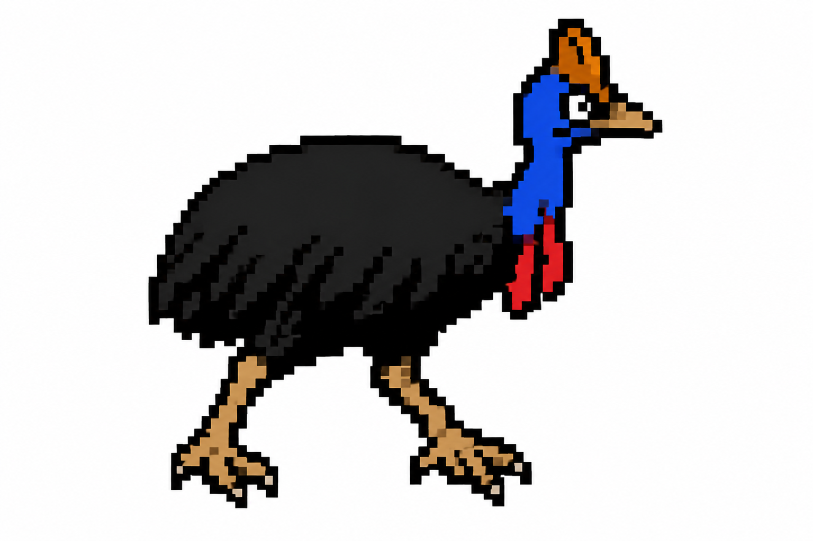
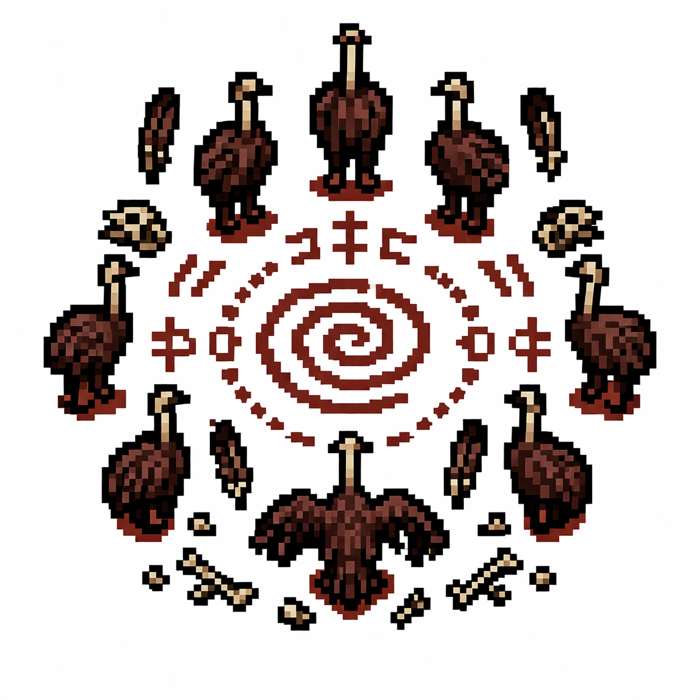
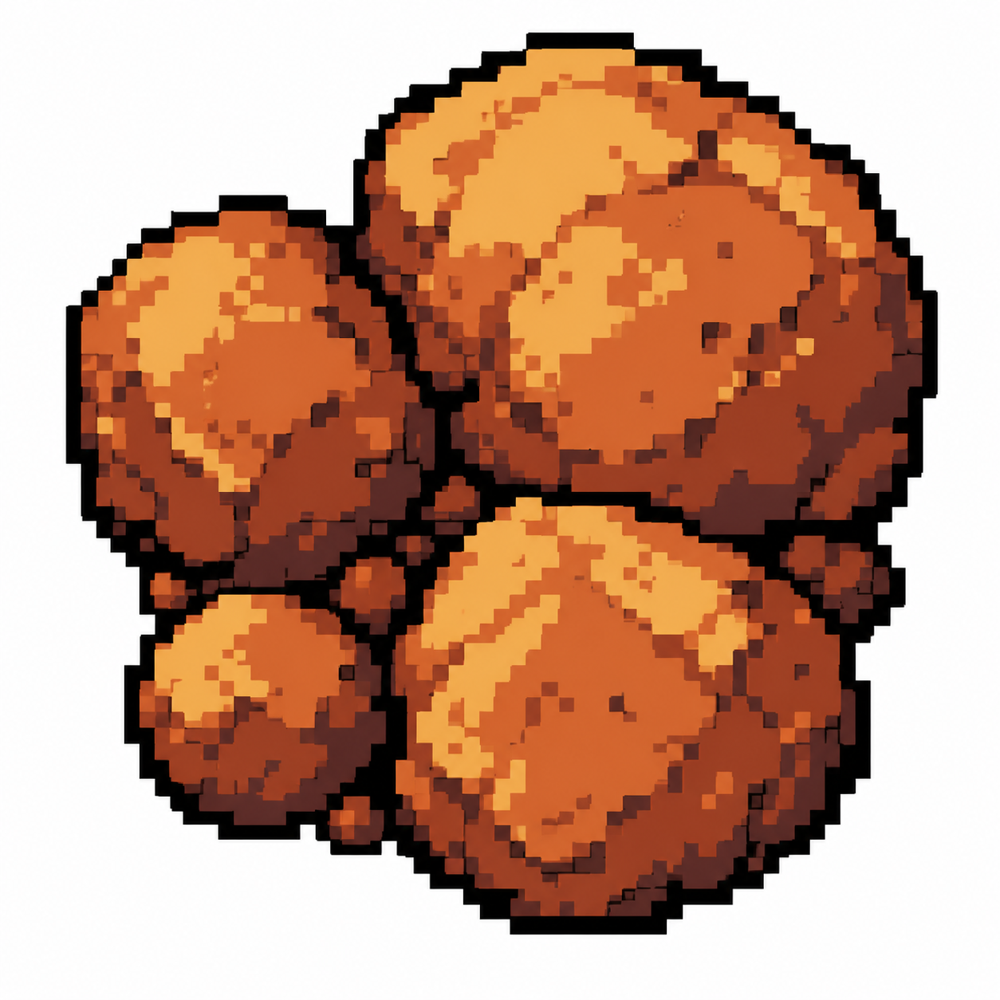
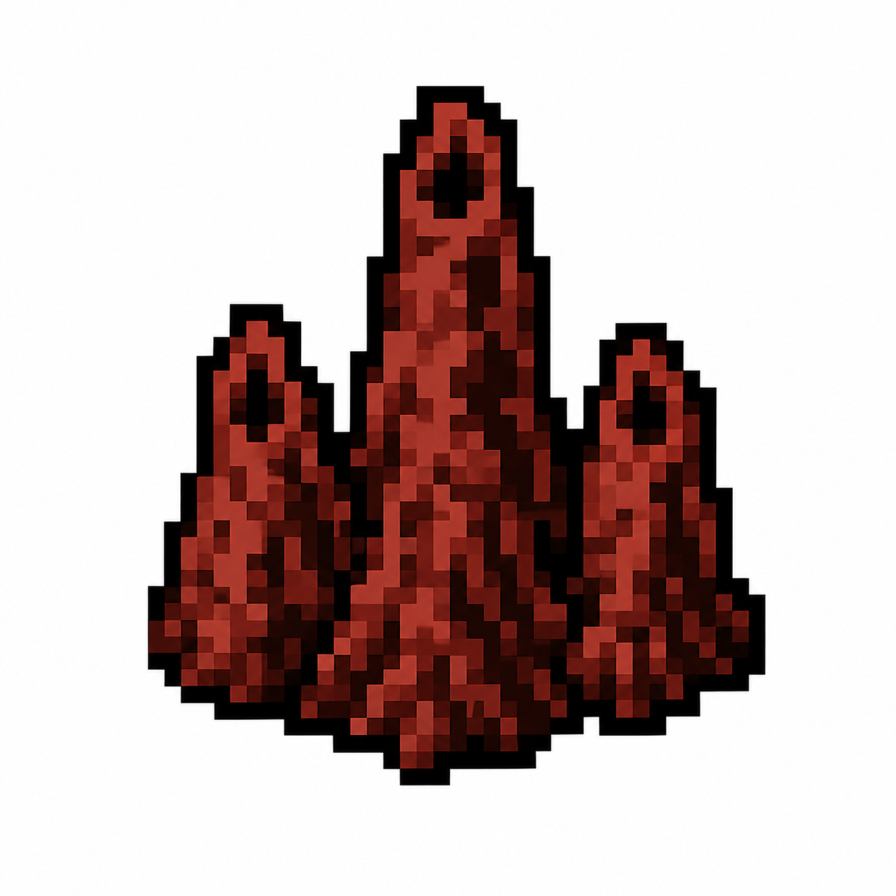

How to play
Old Mick Against the Mob
The two sides
Farmer side
Old Mick
Protect wheat paddocks. Find the Bird Council or destroy the feeding grounds. Two riflemen, one stubborn farmer.
Emu side
The Mob
Raid wheat, defend feeding grounds. Find the Grain Stash or destroy the wheat paddocks. Two emu packs, one cassowary.
How to play
Movement: ATK Tokens destroy cells and DEF tokens increase HP of cells. Straight lines only — horizontal, vertical, or diagonal. ATK tokens hit the first enemy cell they reach across the fence and return. DEF tokens can reposition (spends their turn).
Upgrades: Destroy enemy cells to fund upgrades for your ATK and DEF tokens from Level 1 to 3. Level 4 is a one-time NUKE.
Win: Destroy the enemy HQ for instant win, or destroy all enemy cells for attrition victory.
Terrain
Hard
Rocks
Permanently blocks attacks.
Soft
Termite Mounds
Blocks until destroyed (2 hits).
The two sides
Farmer side
Old Mick's Paddock
Red dirt, wheat rows, corrugated iron. Old Mick defends. The Riflemen attack. Nobody asks Keith questions.
Emu side
The Scrublands
Dense bush, termite mounds, spinifex. The Emu Pack raids. The Cassowary guards. The Bird Council is hidden and it's staying that way.
Attack tokens — 2 per side

The Riflemen
Farmer side
Each turn you direct a Riflemen token — they fire in a straight line, horizontal, vertical, or diagonal, hit the first feeding ground they reach across the fence, and pull back. Two units, two shots per turn. A bullet doesn't curve. Position them to find the shot.

The Emu Pack
Emu side
Each turn you direct a Mob token — it charges in a straight line, horizontal, vertical, or diagonal, hits the first wheat paddock it reaches across the fence, and returns. Two mob tokens, two raids per turn. Position them to open up the lines you need.
Defence tokens — 1 per side

Old Mick
Farmer side
The man himself. Planted on his land, rifle in hand. Every wheat paddock within his 3×3 patrol zone gains +1 HP — takes 2 hits to destroy instead of 1. After Level 2 upgrade he gets a machine gun and that zone expands to 5×5. One Old Mick per game. He is irreplaceable and he knows it.

Cassowary
Emu side
Doesn't raid. Doesn't roam. Just stands there and radiates menace. Every feeding ground within its 3×3 patrol zone gains +1 HP — takes 2 hits to destroy instead of 1. After Level 2 upgrade that zone expands to 5×5. One cassowary per game. It is irreplaceable and it knows it.
Hidden HQs — 1 per side

The Grain Stash
Farmer side
Old Mick's barn. Everything he has is in here — grain stores, supplies, the whole operation. The Emu Pack finds this and the farm dies. Mick has nothing left.

The Bird Council
Emu side
The gathering place. Emu elders, ostrich magicians from lands nobody's mapped. This is where the dark foreign magic lives and where every upgrade comes from. The Riflemen destroy this and it's over — the tribe is broken, the ostriches go home.
Terrain — both sides

Rocks
Both sides
Impassable. Permanently blocks straight-line attacks through it.

Termite Mounds
Both sides
Slows tokens passing through. Takes 2 hits to destroy.
Movement rule
All tokens move in a straight line only — horizontal, vertical, or diagonal. Unlimited range, but the line must be clear. ATK tokens hit the first enemy cell they reach across the fence and return. DEF tokens reposition using the same movement — doing so spends their action for that turn. Rocks permanently block straight-line attacks. Termite Mounds block the line until destroyed — they take 2 hits to clear.
How upgrades are funded
Farmer side funds upgrades by destroying feeding grounds — fewer emus, less pressure, heavier firepower unlocked.
Emu side funds upgrades by raiding wheat paddocks — stolen grain pays the ostriches, and the ostriches bring the magic.
Emu side funds upgrades by raiding wheat paddocks — stolen grain pays the ostriches, and the ostriches bring the magic.
Upgrade levels
🌾 Farmer side
🐦 Emu side
1
ATK
Better Aim
The Riflemen
Old Mick re-arms his boys with better rifles. ATK token now hits the target feeding ground plus one neighbouring feeding ground in the same move.
First Lesson
The Emu Pack
The ostriches arrive and start drilling the pack. Stop running in random directions. ATK token now hits the target wheat paddock plus one neighbour.
2
DEF
Machine Gun Nest
Old Mick
Canberra finally sends the hardware. Old Mick's patrol zone expands from 3×3 to 5×5.
Dark Awakening
Cassowary
The ostrich magic stirs something in the cassowary. It gets bigger. Angrier. Patrol zone expands from 3×3 to 5×5.
3
ATK
Call Canberra
The Riflemen
Old Mick writes a strongly worded letter. Federal government intervenes. ATK token now hits target plus up to two neighbouring feeding grounds. Bureaucratic overkill.
The Stampede
The Emu Pack
Full ostrich training complete. This is no longer a raid — it's a stampede. ATK token hits target plus up to two neighbouring wheat paddocks.
4
NUKE

Unleash Keith
One use only
The Riflemen are useless. Old Mick opens the shed. Keith gets the keys to the ute and a cannon. Nobody asks Keith questions. 3×3 destruction. Keith does not come back.

The Ancestors
One use only
The ostriches perform the ritual. The grain was never just food — it was an offering. Something erupts from the scrub that has no business being in 1932. 3×3 annihilation. No explanation given.
Instant wins
Instant win — Farmer
Destroy the Bird Council
The Bird Council is gone. The ostriches went home. The emus have no idea what they're doing anymore.
Instant win — Emu
Destroy the Grain Stash
The Grain Stash is gone. No wheat, no operation. Old Mick has nothing left to protect.
Attrition wins
Attrition win — Farmer
Wipe the Feeding Grounds
The scrublands go quiet. The outback belongs to Old Mick.
Attrition win — Emu
Raze the Paddocks
No grain, no operation. The pack eats well tonight.
Strategy note
You're always playing two games at once: the hidden game (find their HQ before they find yours) and the attrition game (destroy enough territory to starve them out). Your opponent is doing the same. Upgrades feed both strategies — but funding them costs you resources, and every turn you spend upgrading is a turn you're not attacking.